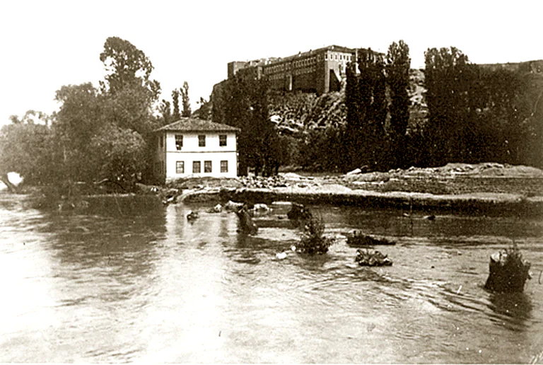
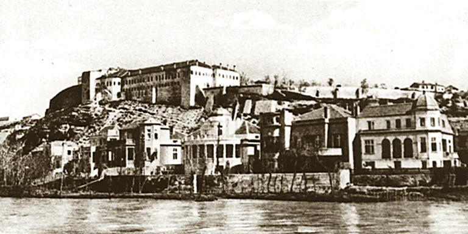

Kale
- Produkcija
- UFUŽ i Dokumentarni film Prag
- Scenarij i režija
- Slavko Janevski i EMAN CANERA
- Godina
- 1959
- Trajanje
- 00:10

Ulaz u skopsku tvrđavu - Kale. (početak 20. stoljeća)
Jedno od najdominantnijih mjesta u središtu grada Skoplja zauzima skopska tvrđava - Kale*. Arheološka iskapanja pokazala su da je Kale bilo naseljeno još u prapovijesno doba - u neolitiku i ranom brončanom dobu. Na Kaleu se živjelo zbog njegova izvanrednog strateškog položaja. Proučavanjem građevine utvrđeno je da je u temeljima korišten materijal iz Skupa, koji su gotovo potpuno razoreni u katastrofalnom potresu 518. godine. Nakon tog potresa grad se seli na današnju lokaciju. Izgrađena je utvrda koja se kroz stoljeća proširivala i jačala. Danas je ostao samo mali dio te utvrde, koji je restauriran, a u njegovu je središtu uređeno šetalište.
* (Kale na turskom jeziku znači tvrđava, a narod je tu riječ prihvatio kao skraćeno ime za skopsku tvrđavu)

Skopska tvrđava - Kale s dijelom njezinih zidina.
- početak 20. stoljeća

Skopska tvrđava - Kale - 1910-ih.

Skopska tvrđava - Kale - snimljena sa strane današnjeg parka, kraj 19. stoljeća.

Skopska tvrđava - Kale - 1910-ih.

Skopska tvrđava - Kale - 1910-ih.

Skopska tvrđava - Kale. Snimljena s mjesta današnjeg parka, 1910-ih.

Skopska tvrđava - Kale. Snimljena s mjesta današnjeg parka, 1910-ih.

Pogled na skopsku tvrđavu - Kale. 1920-ih.

Pogled na skopsku tvrđavu - Kale sa sjeverne strane.
- 1910-ih.

Prekrasna fotografija grada i toka Vardara. Lijevo je skopska tvrđava - Kale. U sredini se vide zgrade Časničkog doma i Narodne banke. Desno je planina Vodno, a u daljini rubovi planine Kitke
- kraj 1920-ih.

Skopska tvrđava - Kale i stara kavana „Boges“, u kojoj su se okupljali glumci i održavale prve kazališne predstave - početak 20. stoljeća.

Skopska tvrđava - Kale s vojarnama - 1911. godina. Ispod tvrđave vidi se stara kavana „Boges“.

Skopska tvrđava - Kale i stara kavana „Boges“
- kraj 1910-ih.

Fotografija je snimljena s Kamenog mosta, oko 1910. godine. Lijevo se vidi staro tursko kazalište, a iznad njega skopska tvrđava - Kale.

Fotografija je snimljena s Kamenog mosta, oko 1910. godine. Lijevo se vidi staro tursko kazalište, a iznad njega skopska tvrđava - Kale.

Skopska tvrđava - Kale i stara židovska mahala ispod nje - kraj 1910-ih.

Skopska tvrđava - Kale, s dijelom kuća u židovskoj mahali koje su u izgradnji - 1920-ih.

Skopska tvrđava - Kale, a ispod nje dio kuća židovske mahale - 1920-ih.

Skopska tvrđava - Kale i novoizgrađene zgrade u židovskoj mahali - 1920-ih.

Skopska tvrđava - Kale s dijelom kuća židovske mahale - 1920-ih.

Skopska tvrđava - Kale i novoizgrađene zgrade u židovskoj mahali - 1920-ih.

Skopska tvrđava - Kale. Ispod nje je dio kuća židovske mahale - 1920-ih.

Skopska tvrđava - Kale i novoizgrađene zgrade u židovskoj mahali - 1920-ih.

Pogled na skopsku tvrđavu - Kale iz jedne od ulica židovske mahale - 1920-ih.

Fotografija snimljena s Časničkog doma - oko 1930. godine. Prekrasna fotografija Narodnog kazališta, drvenog mostića i skopske tvrđave - Kale.

U prednjem planu je Narodno kazalište, a iznad njega uzdiže se skopska tvrđava - Kale - 1930-ih.

Fotografija skopske tvrđave - Kale, na kojoj se dobro vide sastavni dijelovi utvrde. Ispod tvrđave vidi se Narodno kazalište u svoj svojoj ljepoti.
- 1930-ih.

Fotografija skopske tvrđave - Kale, na kojoj se dobro vide sastavni dijelovi utvrde. Ispod tvrđave vidi se Narodno kazalište - 1930-ih.

U prednjem planu je Narodno kazalište, a iznad njega uzdiže se skopska tvrđava - Kale - 1950-ih.

 Akvadukt4 razglednice
Akvadukt4 razglednice Kale30 razglednica
Kale30 razglednica Mostovi60 razglednica
Mostovi60 razglednica Kej58 razglednica
Kej58 razglednica Trg46 razglednica
Trg46 razglednica Građevine66 razglednica
Građevine66 razglednica Kršćanski hramovi19 razglednica
Kršćanski hramovi19 razglednica Muslimanske građevine33 razglednice
Muslimanske građevine33 razglednice Časnički dom29 razglednica
Časnički dom29 razglednica Kazalište28 razglednica
Kazalište28 razglednica Željeznički kolodvor13 razglednica
Željeznički kolodvor13 razglednica Škole36 razglednica
Škole36 razglednica Parkovi12 razglednica
Parkovi12 razglednica Tržnice18 razglednica
Tržnice18 razglednica Ulice38 razglednica
Ulice38 razglednica Panorama I60 razglednica
Panorama I60 razglednica Panorama II30 razglednica
Panorama II30 razglednica Kolaži55 razglednica
Kolaži55 razglednica Poplave9 razglednica
Poplave9 razglednica Potres27 razglednica
Potres27 razglednica Skoplje 2000.26 razglednica
Skoplje 2000.26 razglednica